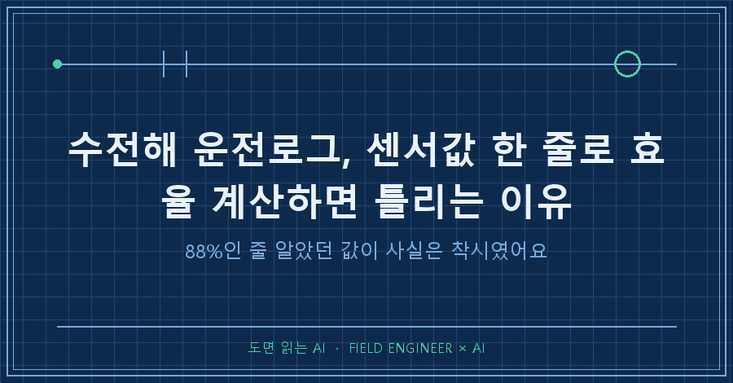
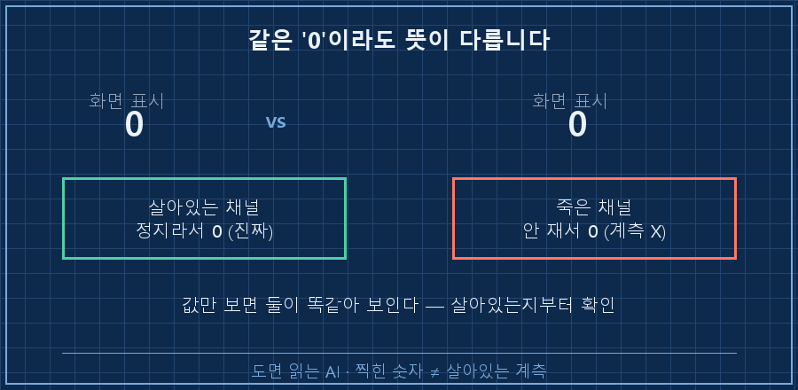
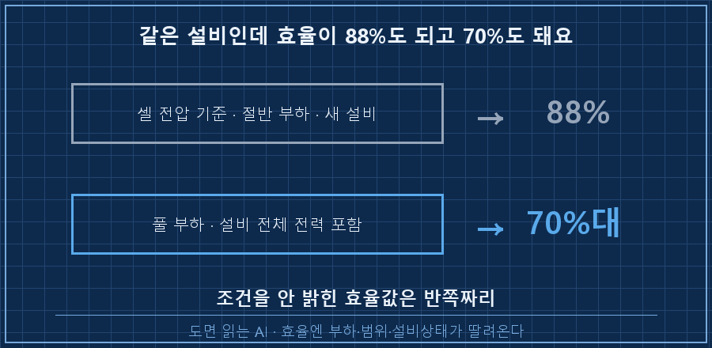
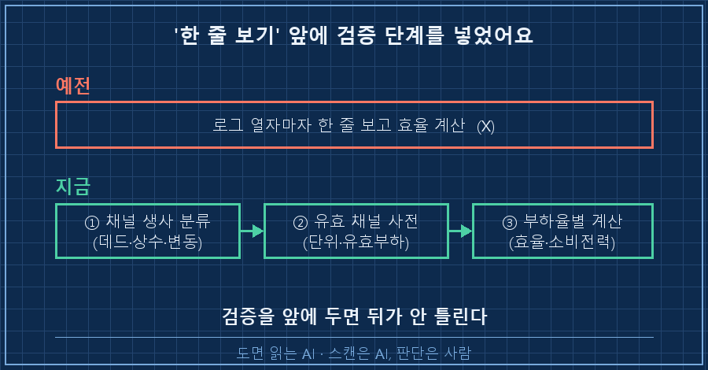

수소 설비 운전로그를 열었더니 효율 칸에 88%라는 값이 찍혀 있었어요.
"오, 88%면 잘 나오네" 하고 그대로 옮겨 적을 뻔했습니다.
결론부터 말하면, 그 한 줄만 믿었으면 크게 틀릴 뻔했어요.
수전해 운전로그에서 센서값 한 줄로 효율을 계산하면 안 되는 이유는 세 가지예요.
값이 찍혀 있어도 그 채널이 죽어 있을 수 있고, 같은 효율값도 어떤 부하에서 잰 건지에 따라 뜻이 완전히 달라지고, 화면에 보이는 값이 실측이 아니라 표시용 가공값일 수도 있거든요.
80만 행이 넘는 로그를 AI랑 한 달치 훑고 나서야 이 세 함정을 다 밟아봤습니다.
저는 15년차 제어 엔지니어예요.
수소 설비 제어판넬 설계하고, PLC 코드 짜고, 시운전 현장에서 데이터가 제대로 들어오는지 확인하는 게 일이죠.
요즘은 이렇게 쌓인 운전 데이터를 정리하고 검증하는 일을 AI랑 같이 하는데, 이번엔 그 데이터한테 제대로 한 방 먹었어요.
1. 값이 찍혀 있다고 그 센서가 살아있는 건 아니에요
첫 함정은 죽은 채널이었어요.
로그는 초당 한 번씩, 채널 640여 개를 동시에 기록하고 있었어요.
문제는 그 640여 개가 다 살아있는 게 아니라는 거였죠.
AI한테 채널을 하나씩 스캔시켜서 "값이 변하는지"를 봤더니, 640여 개 중 3분의 1이 죽어 있었어요.
아예 빈 채널이 180여 개, 값이 하나로 굳어 안 변하는 채널이 80여 개.
겉보기엔 숫자가 찍혀 있어서 살아있는 것처럼 보이지만, 실제로는 계측이 안 되고 있는 자리였어요.
[채널 품질 스캔 결과 — 640여 개]
변동(살아있음) : 380여 개
데드(빈 채널) : 180여 개
상수(값 고착) : 80여 개
→ 약 1/3이 실계측 아님제일 뜨끔했던 건 냉각 계통 전력 채널이었어요.
값이 0으로 찍혀 있길래 "정지 중인가" 했는데, 옆에 붙은 가동 신호는 계속 ON이었거든요.
알고 보니 그 전력계는 결선이 안 된 데드 채널이었어요.
"0이라 안 돈다"가 아니라 "안 재고 있어서 0"이었던 거죠.

2. 같은 효율값도 어느 부하에서 잰 거냐에 따라 뜻이 달라요
두 번째 함정이 처음의 그 88%였어요.
이 값은 셀 전압을 기준으로 뽑은 효율인데, 알고 보니 절반 부하에서, 그것도 설비가 갓 새것일 때 나온 값이었어요.
수전해 스택은 전류를 많이 흘릴수록(부하가 높을수록) 셀 전압이 올라가요.
전압이 올라가면 같은 수소 1을 만드는 데 전기를 더 쓰니, 효율은 내려가고요.
그러니 절반 부하에서 잰 88%는 그 순간의 스냅샷일 뿐, 설비를 꽉 채워 돌릴 때의 효율이 아니에요.
부하를 풀로 올리고, 스택 말고 설비 전체가 먹는 전기(펌프·냉각·제어반까지)를 다 넣어서 다시 계산했더니 효율은 70% 초반으로 내려왔어요.
88%랑 70%는 거의 20%포인트 차이인데, 이게 다 "어느 조건에서 잰 한 줄이냐"에서 갈린 거예요.

효율 하나 적는데 이렇게 조건이 붙어요.
어느 부하인지, 스택만인지 시스템 전체인지, 새 설비인지 열화된 설비인지.
이걸 안 달고 "효율 88%"라고 문서에 박으면, 읽는 사람은 풀부하 시스템 효율로 오해해요.
3. 화면에 보이는 값이 실측이 아닐 때도 있어요
세 번째는 좀 무서운 함정이었어요.
예전에 같은 계열 설비를 볼 때, 화면에 뜨는 유량·전력값이 실제의 2배로 표시되던 적이 있었거든요.
스택 한 기만 돌리는데 두 기가 도는 것처럼 보이게, 화면 표시용으로 값을 부풀려 놓은 자리였어요.
그때 배운 게 판별 리트머스예요.
그 센서가 진짜인지 보려면 설비를 세웠을 때 값이 어떻게 되는지를 봐요.
진짜 유량계라면 설비가 멈추면 값이 0 근처로 뚝 떨어져요.
근데 표시용 가공값은 멈춰도 어정쩡한 숫자에 걸려 있거나, 옆 채널을 베껴서 그럴듯하게 흉내를 내요.
[진짜 센서인지 판별 — 설비 정지 순간을 본다]
실측 센서 : 정지 → 값이 0 근처로 뚝
표시용 가공 : 정지 → 어정쩡한 값에 고착 / 옆 채널 복사그래서 이번 로그도 화면값을 바로 안 믿고, 실제로 로깅된 원천 채널이 정지 구간에서 0으로 떨어지는지부터 확인했어요.
다행히 이번 데이터의 전력·유량 원천값은 실측이 맞았고요.
하지만 이 습관이 없었으면, 2배로 부푼 화면값을 그대로 효율 계산에 넣을 뻔한 거죠.
4. 그래서 '한 줄 보기' 전에 순서를 하나 넣었어요
세 함정을 밟고 나서 제가 바꾼 건 마음가짐이 아니라 순서였어요.
"조심해야지"는 다음에 또 까먹으니까, 아예 데이터를 보기 전 단계를 하나 끼워 넣었어요.
- 먼저 전 채널을 죽었나 살았나로 분류해요 (데드·상수·변동)
- 살아있는 채널만 사전으로 정리해요 — 이름, 단위, 어떤 부하에서 유효한지
- 그다음에야 부하율별로 묶어서 효율이든 소비전력이든 계산해요
이 사전을 한 번 만들어두니, 다음에 새 운전일 데이터가 들어와도 "이 채널은 죽은 거"라고 바로 걸러져요.
한 줄을 보기 전에 이 채널이 믿을 값인지를 먼저 아는 거죠.

AI가 잘한 건 640여 개를 하나씩 스캔해서 죽은 채널을 골라내는 노가다였어요.
사람이 눈으로 640개를 언제 다 보겠어요.
대신 "이 88%가 어느 조건이냐"를 되묻고, 판별 리트머스를 들이대는 건 제 몫이었고요.
빠르게 훑는 건 AI, 그 값이 무슨 뜻인지 못 박는 건 사람. 이번에도 그 분담이 살렸어요.
자주 묻는 질문
Q. 운전로그에 효율이 이미 계산돼 찍혀 있으면 그대로 쓰면 되지 않나요?
그 값이 어느 부하에서, 무엇까지 포함해 계산됐는지를 모르면 위험해요. 절반 부하·스택만 기준이면 풀부하 시스템 효율보다 한참 높게 보여요. 조건표를 확인하고 쓰는 걸 권해요.
Q. 채널이 죽었는지 살았는지 어떻게 빨리 아나요?
값이 시간에 따라 변하는지, 설비를 세웠을 때 반응하는지를 봐요. 값이 하나로 굳어 있거나 정지해도 안 변하면 계측이 안 되는 채널일 확률이 높아요. 전 채널을 한 번 스캔해 데드·상수·변동으로 분류해두면 편해요.
Q. 이런 검증을 AI 없이 사람이 다 할 수 있나요?
할 수는 있는데 시간이 많이 들어요. 채널 수백 개를 하나씩 보는 일은 AI가 훨씬 빠르고, 사람은 그 결과를 보고 "이 값이 말이 되나"를 판단하는 데 집중하는 게 효율적이에요.
숫자가 찍혀 있으면 우리는 그걸 사실로 믿어버리기 쉬워요.
근데 현장 데이터는 살았는지 죽었는지, 어떤 조건에서 잰 건지를 먼저 물어야 진짜 값이 되더라고요.
지금 보고 계신 그 설비 대시보드의 숫자 중에도, 실은 안 재고 있는 자리가 하나쯤 있을지 몰라요.
현장 데이터를 AI랑 어떻게 검증하는지는 makefield.ai에 하나씩 정리해두는 중입니다.
---
현장 엔지니어를 위한 AI 도입·활용 문의: makefield.ai